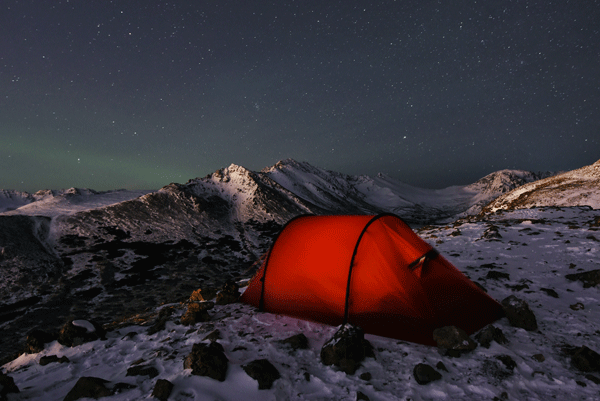
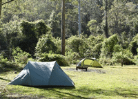
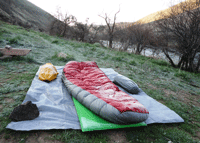
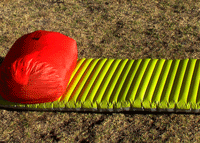
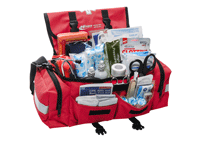
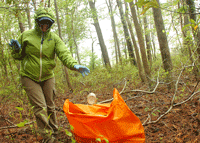
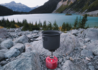
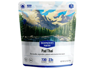

About
Camping is a form of outdoor recreation or outdoor education involving overnight stays with a basic temporary shelter such as a tent. Camping can also include a recreational vehicle, sheltered cabins, a permanent tent, a shelter such as a bivy or tarp, or no shelter at all. Typically, participants leave developed areas to spend time outdoors, in pursuit of activities providing them enjoyment or in a form of educational experience. Spending the night away from home distinguishes camping from day-tripping, picnicking, and other outdoor activities. Camping as a recreational activity became popular among elites in the early 20th century. With time, it grew in popularity among other socioeconomic classes. Modern campers frequent publicly owned natural resources such as national and state parks, wilderness areas, and commercial campgrounds. In few countries, including Sweden and Scotland, public camping is legal on privately held land as well. Camping is a key part of many youth organizations around the world, such as Scouting, which use it to teach both self-reliance and teamwork. School camping trips also have numerous benefits and can play an essential role in the personal growth and development of students.
Equipment for Camping
| Equipment | Example |
|---|---|
| Tent |  |
| Sleeping Bag |  |
| Sleeping Pad |  |
| First Aid Kit |  |
| Wood & Fire Starter | |
| Trash Bags |  |
| Camp Stove |  |
| Food |  |
Places to Camp in Colorado
1. Brainard Lake Recreation Area, Indian Peaks Wilderness
2. Echo Lake Campground, Mount Evans Recreation Area
3. Lone Duck Campground, Pikes Peak Area
4. Silver Bell Campground, Maroon Bells Wilderness
5. Marble Mountain Yurt, White River National Forest
6. Moraine Park Campground, Rocky Mountain National Park
7. Piñon Flats Campground, Great Sand Dunes National Park
8. Amphitheater Campground, Ouray
9. Carson Lake Recreation Area, Grand Mesa National Forest
10. Goose Creek Trailhead, Lost Creek Wilderness
11. Molly Brown Campground, Turquoise Lake Recreation Area
12. Chicago Basin, Weminuche Wilderness
13. Angel of Shavano Campground, San Isabel National Forest
14. Twin Peaks Campground, Twin Lakes
15. South Rim Campground, Black Canyon of the Gunnison National Park
16. Grand Junction KOA Holiday, Grand Junction
17. South Colony Lakes, Sangre De Cristo Wilderness
18. Mirror Lake, Indian Peaks Wilderness
19. Buffalo Pass, Steamboat Springs
20. Alpine Loop, San Juan Mountains
21. Cottonwood Pass, Buena Vista
22. Guanella Pass, Georgetown
23. Mountain Park Campground, Roosevelt National Forest
24. Silver Thread Campground, San Juan Mountains
25. Arapaho Bay Campground, Arapaho National Forest
26. Pearl Lake Campground, Steamboat Springs
27. Sun Outdoors Rocky Mountain Campground, Granby
28. Bear Lake Campground, Flat Tops Wilderness Area
29. Teal Campground, Pagosa Springs
30. Upper Slate Lake, White River National Forest
31. Morefield Campground, Mesa Verde National Park